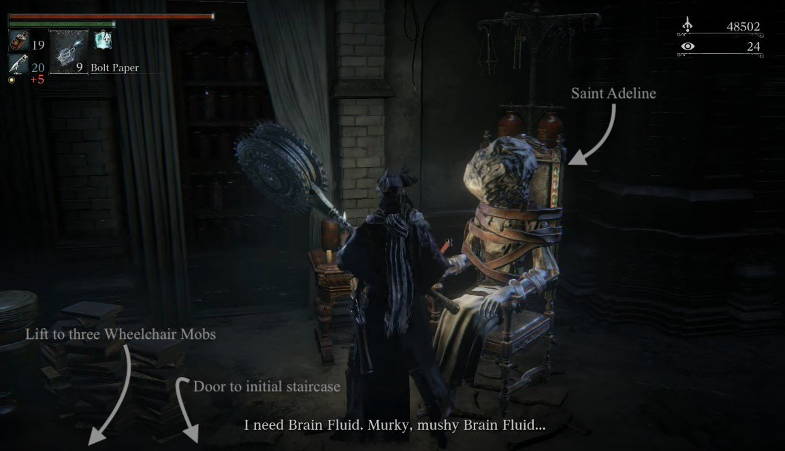

Research Hall is a location in Bloodborne. It is part of The Old Hunters DLC. The next area is the Fishing Hamlet.
General Information
{kind=link}
- Previous: Hunter's Nightmare
- Next: Fishing Hamlet
- Suggested Level: 80 to 100
- Suggested Upgrade: +7 or +10
- Bosses: 2
- Lamps: 2
- Insight Gained: ??
Research Hall Map
{kind=link}
{kind=link}
NPCs in the area
- Harrowed Hunter at the elevator leading to the Research Hall
- Saint Adeline in the room at the first floor of the Research Hall. Needs to be accessed from the back and the higher floors.
- Enlarged Head Patient NPCs
Bosses
Items
Weapons & Armor
Consumables
- Antidote x2
- Beast Blood Pellet x6
- Blood Stone Chunk x7
- Blue Elixir x10
- Frenzied Coldblood
- Great One's Wisdom
- Kin Coldblood
- Madman's Knowledge x1
- Sedative x8
Specials
- Balcony Key
- Underground Cell Key
- Milkweed
- Pulsing Damp Blood Gem
- Lethal Damp Blood Gem
- Striking Damp Blood Gem
- Dirty Damp Blood Gem
- Brain Fluid (Quest Item, x3)
Enemies
- Carrion Crow
- Church Servant
- Enlarged Head Patients
- Enlarged Head Giant
- Wheelchair Mob
- Giant Rat
- Scurrying Beast (Wandering Madness) x3
Lore Notes
- Presumably where the Healing Church conducted experiments on humans in an attempt to create beings capable of communication with the great ones. Many of the enemies in the area are the failed results of these early experiments, although the Healing Church would eventually find success in this endeavour, creating the Celestial Emissary.
- The presence of a Lumenflower garden directly above to that found in the Upper Cathedral Ward (location of Celestial Emissary boss fight) suggests that this secret research facility was at one time a part of the same complex.
Research Hall Walkthrough
Welcome to the Hall
Upon finishing the cutscene where you are shown riding up the elevator from the Surgery Altar, you will find yourself in a darker area, with a lamp just ahead to your left. Go ahead and light it. You'll want to stop by here every now and then to spend your blood echoes. In front is a staircase leading up to the Research Hall, a vertically designed level full of convoluting staircases and insane patients with enlarged heads. Head up the stairs and to your left you will see a Scurrying Beast. Dispatch it quickly, and you will be rewarded with x2 Blood Stone Chunk. Next, take a look at the pool in the center of the large chamber. On the edge is a non-hostile version of the majority of the enemies that you'll be facing in this area, an Enlarged Head Patient. Approach him, and he will begin to ask if anyone has seen his eyes. This is about as useful as he gets, so instead, turn your attention to the pool again. Next to the large central column is a corpse containing x2 Blue Elixir. You'll want to move quickly, as the water will build up your slow poison meter. At the back of the chamber, on the edge of the pool, is another Wandering Madness. Kill it to earn yourself another x2 Blood Stone Chunk.

There is also a door marked “1st Floor Balcony”, but it's locked right now, so head back to the entrance. From here, head toward the large staircase. Be careful as you ascend, because you'll likely draw the attention of a Patient or two. A few tips and notes about these guys:
- Like most enemies, these can be stunlocked into a kill relatively easily.
- They can attack suddenly and pack a punch, especially with their flailing attack, which can stunlock you into a quick death.
- Be mindful of when they run at you, as the attack that follows is usually a headbutt. With their heads being distended and filled with fluid you may think you're just out of reach but their heads, disgustingly enough, will stretch during this attack and it does a lot of damage if you're caught by it.
- It's also worth bearing in mind that the patients are blind, they become aggressive and chase you based on the sounds they can hear.Bottles, vials and jars all litter the ground meaning when you step on them they can hear you. If you stand perfectly still, or walk very slowly, they won't be able to hear your movements if they're not patrolling.
On the Up
Once they are defeated, head up to the small landing, where you will encounter more patients. Dispose of them, then head up the staircase on the right-hand side, first. At the top, turn left, and head down this way. At the end of this hallway are two Patients, one being visible while the other hides behind the shelves. After you kill them, pick up the x2 Blood Vials on the corpse at the end. Turn back to face the way you came from and you should find a door blocked by some medical equipment. Destroy the obstructing items, and proceed into the door.
Inside are non-hostile patients, and sounds of distress and destruction that cannot be seen in this room. Talk to them if you'd like, then climb the ladder here. When you get to the top, you'll identify the source of the disturbing noises you heard earlier as only a small corridor separates you from it: an Enlarged Head Giant. He's quite similar to his smaller brethren however, is larger in size and that comes with more health and more damage. He also wields an IV Stand, so watch out. Once you've defeated him, pick up the x5 Blood Vials in the corner then you can head up the stairs directly in front of you to open up a shortcut to a floor above. After doing this, head back down and as you see the corridor you came in from (from the ladder), turn right instead, and head down the ladder here.
At the bottom you'll find four regular Patients in your immediate vicinity. Take care of them, then head down the corridor. Coming out of it, you'll find a slope going down straight ahead, and a platform holding three acid-tossing Patients, on the right. Take care of the three first, then head down the slope to kill the remaining three Patients on the lower floor. At the back of this room, find x3 Sedatives. If you head out the doorway on this level, you'll find yourself back on the balcony where you first broke through the medical equipment to open the door. You'll also find a few more Patients to deal with. Go back up to the room that contained the Enlarged Head Giant, and out the shortcut door you just opened.
You'll find yourself on a balcony. Far off to your right, you'll notice some more Patients, but don't be too quick to engage, as there are quite a few of them that will walk out from the nearby room, and running into the bottles on the ground will alert them to your presence. Let them make their way up the stairs, and watch them by the gatling gun of a Wheelchair Mob.
After they have all been killed, make your way along the balcony, picking up the x2 Antidote on the left outcropping. Head into the room on the right at the end of the balcony, and deal with any remaining enemies, but be careful, as the room is dark and you'll likely be ambushed by a patient with a deformed arm. If it grabs you, you will take continuous damage, as well as become poisoned. Once the room is clear, head to the far end to pick up the x3 Quicksilver Bullets, then ascend the steps to your right. Turn right at the top to find a corpse with x1 Dirty Damp Blood Gem (5).
Head back down the stairs and out the door. Begin climbing the staircase in front of you, and immediately launch into a sprint, running all the way up onto the next landing to avoid the hail of fire from the Wheelchair Mob's Gatling Gun. At the top, head down the staircase on the right, you'll arrive at the same level as him. Don't take your revenge too quickly, though, as there is a trap on the way there. Make note of the shelves lined with jars on the left hand side. Down the balcony, there will be a pressure pad with bottles on it. Stepping on this will cause the nearby shelves to send deadly acid flying outward. After avoiding the trap, deal with the enemy in the breathing sentry turret, being careful not to get caught in his stream of bullets.
Head back down the balcony and through the door on the right marked “Laboratory Floor 5”. Head up the steps and into the elevator, which will take you downward. Be careful exiting the elevator, as another Wheelchair Mob on the right will spew acid at you. Deal with him quickly, then take care of the other two of them on the other side of the room, both wielding pistols. After dealing with them, head over to the nearby corpse to pick up 6x Beast Blood Pellet.
Head to the other side of the room and pull the lever on the left side to call up the elevator. Once it arrives, head inside and ride it down. At the bottom, you'll find yourself in a room with Saint Adeline (a tied up Enlarged Head Patient), in the far left corner. Don't mistake her as an enemy, because she provides important items! Approach her and she will begin speaking. Exhaust her dialogue which tells you to find her some Brain Fluid. We don't have any at this point, but we'll find some soon. If you open the door on the right, you'll find yourself back in the starting area, with the Wandering Madnesses and the first non-hostile Patient. Visit the Hunter's Dream if you need to, then head back up the elevator into the room with the wheelchair enemies.

Head to the back of the room and take the ladder down. Drop down to the lower area to deal with the two Patients then pick up the Decorative Old Hunter Garb and Decorative Old Hunter Trousers. Exit the room and turn left to find another Patient and a Frenzied Coldblood(9) at the end of the corridor. If you head right, you will find a set of stairs that lead nowhere -for now- and an open door, leading to a balcony containing another non-hostile Patient, that only mumbles to herself. For now, we head back to the multi elevator room, by heading back up the ladder we just came down from.
Take a left out the door, and deal with the Church Servant, being careful not to roll off of the edge, while being mindful of the pressure pad trap on the floor; proceed with caution to the top of the stairs on the right, where you will find a naked Patient.
- These enemies are faster and attack more erratically, so be careful.
- They tend to leap straight at you with a flailing melee attack.
- Your best bet is to bait the leap out and dodge round them.
- When they land they're still for a second or so leaving you ample opportunity to get in with a combo and kill them.
Secret Detour
Once he has been dealt with, turn your attention to the item on the far wall. Avoid the final pressure pad trap on the way, and pick up the x1 Madman's Knowledge. Head back to the elevator room and enter the elevator on the left. As it starts to move, press against the left-hand wall, and start walking forward. As the elevator rises, you will jump out into a secret hallway. Head forward and turn left when you're out on the balcony. Continue forward to the end of the balcony and descend the steps to your right, but be careful, as there is an NPC Hunter here:
- An easy way to deal with him is to quickly run past him to the left, and around the middle of the platform, staying on the other side of the brain creature. This is because he will try to run after you, and will get stuck between the brain and the pillar.
- Once he's stuck, just hit him with long range weapons, such as the transformed Saw Cleaver or the transformed Threaded Cane.
Once the hunter has been dealt with, pick up the x5 Sedative he drops and head over to the now most likely dead brain creature. Pick up the Brain Fluid then proceed to the side of the platform opposite the staircase, to drop down onto another staircase. Once you do, be prepared to fight two Giant Rats, that fall from above. Deal with them, then find a ladder to climb.
Brain Juices Flowing
You'll find yourself back in the elevator room. Now that we have the Brain Fluid, we can go ahead and give it to Adeline. Take the left elevator down to her room, and offer it to her. She will then offer her blood. Accept it, and head back up in the elevator. Head into the lift opposite to emerge onto the highest balcony. Take the steps directly in front of you, then head around the floor, notice that this is the same floor you killed the Gatling Wheelchair Mob. If you continue around, you'll come across a new variation on the Patient enemy. These are blind, and will not see you if you walk by them, but they have increased poise, and don't flinch away from your attacks. Dispose of them and turn right, heading to the end of the balcony, minding the trap on the floor as you go by.
At the end, pick up the x4 Blue Elixir, and head back along the balcony, stopping as you reach a door on your right, marked “Patient Room Floor 5”. Head inside, and go to the far side of the room to find x4 Blue Elixir. The item next to this is the Enlarged Head. Upon picking up this item, you aggro the enemy Enlarged Heads in the room and while they seem like lifeless body bags, they are actually severed brain creatures and will attack when you pick up the item. These enemies build up frenzy with their tentacle attacks, so be extra careful. There is another brain creature on the ceiling at the room exit, and it will try to fall on your head as you leave.
When it's safe, head back outside and proceed up the staircase. At the top, you will encounter another Enlarged Head Giant. Kill him, and head up the ladder. You will find yourself in the tower's belfry. There a couple of Giant Rats walking around here, so be mindful of them, and be careful not to fall. Head over to the item on the far beam, but be careful, because as you approach it, a Carrion Crow will fall from above. Deal with it, then pick up the x1 Great One's Wisdom. Next, head over to the window on the far side of the belfry. Speak with the patient bashing his head against the wall to get some more dialogue, then head right. There are a couple more Crows guarding an item, and another that drops a Guidance. Defeat them, and pick up the x1 Blood Stone Chunk. Turn around, and head over to the beam closest to you. Follow it halfway, and descend the steps on the right to the middle platform. Interact with the lever here to raise middle pillar and its staircases, altering the entire level.
Final Errands
The way to the boss is now open, but there are a few more items to pick up in this area before we challenge it. Once the platform stops moving, head onto the beam opposite the window and turn left at the end of it. You'll find another brain creature. Attack it to get the second helping of Brain Fluid. Head back in the opposite direction along the beam and you'll find a ladder. Descend it and then head down the steps. Take the left staircase down to a chest guarded by a few crows. Open the chest to find x1 Finestrike Damp Blood Gem (5). Turn around and head back up the stairs, and this time, take the other staircase downward, but be careful, as there some naked patients at the bottom, and the staircase has no railing. After these enemies have been dispatched, head back down to the room with the decapitated Enlarged Heads ambush.
Facing away from the room, turn right. Follow the balcony all the way around the room, eliminating any Patients along the way (be careful of that trap on the floor from earlier!). Head into the room on the right at the end, and take the elevator down, heading out into the secret hallway again as you descend. Take a left on the balcony, and follow it until you arrive at a staircase on your right. Head on down, and take out any patients you encounter. If it's safe, head up the left staircase. At the top, there will be more patients, coming from both sides. Deal with them, and head left along the balcony until you see a corpse on the left with an item. Walk over to it and pick up the x4 Quicksilver Bullets.
Head over to the room on the right marked “Patient Room Floor 3”. As soon as you enter, you will be ambushed from the right by a patient with a deformed arm. Make sure he doesn't grab you, then dispose of him. Inspect the body to find the Underground Cell Key. This key will unlock all of the cells in the previous area with Brador. Travel back out to the balcony and move along it, heading back down the staircase when you arrive at it. When you arrive back at the central platform, head down the stairs to the left. Here you will encounter a worm-like variant of the patient -don't be fooled by its size, this thing can pack a punch with its attack that involves shooting tendrils out of its face in your direction. After it's dead, head over to the corpse to find the Loch Shield.
From this platform, you can drop back down onto the ground floor below. This area is different from before, as it is covered with the worm patients, and there are some new items in the pool. The one by the pillar is a x1 Lethal Damp Blood Gem (5), and the one in the corner is a x1 Kin Coldblood (10). After collecting the items, head back into Adeline's room, where she will seem to be in distress. Talk to her and she will ask for more brain fluid. Make sure you have used her blood before this. If the dialogue does not trigger, try running to the lamp and resetting the area until she finally accepts the second dose of brain fluid from you. After she takes it, she will provide you with the Balcony Key. This is the key we need for that door that was locked at the start. Quit the game and reload for until you find her in the corner of the room, as just a giant head. Interact with her again, and this time, smack her once to retrieve another dose of Brain Fluid. Now you'll have to feed her the third serving of her Brain Fluid to obtain the Milkweed.
Key in hand, head out of Adeline's room, and make your way to the far side of the chamber to the door marked “1st Floor Balcony”. Unlock the door, and head on through. Outside is an area that looks a lot like the Lumenflower Gardens in the Upper Cathedral Ward. There are a lot of patients here, and they attack differently from the other ones, using magic attacks. Drop down onto the roof, then onto the little outcropping, before finally landing on the balcony overlooking the garden. Head left and around the top of the garden to the corpse on the far side, and pick up the x1 Kin Coldblood (10).
When you're ready, head down into the garden below. You can either fight the enemies here, or make a bee-line for the Blacksky Eye at the end. After picking it up, turn around, and head for the large window. Break it, and jump down to the cathedral balcony. Take a left and defeat the Scurrying Beast to obtain x2 Blood Stone Chunk. Head back around the balcony towards the chest. Jump over the gap, and open the chest to receive x1 Pulsing Damp Blood Gem (5). Head back to the hole in the floor, and drop down onto the ledge. From here, drop down on top of the bed, and then drop to the floor. You'll find yourself back at the Surgery Altar. From here, you can go unlock the cells, or you can take the elevator back up to the Research Hall.
To the Boss
Once you're back at the research area lamp, you'll see the Harrowed Hunter again. He will tell you that you should climb the Astral Clocktower and kill Maria. Head back into the Hunter's Dream to spend your hard earned blood echoes. Once you're back, head back to Adeline's room. Provided you've reloaded the area, you can now complete her questline by giving her the third serving of Brain Fluid to receive the Milkweed rune. After that, head into the elevator, and when you get to the top, walk out the door to your left.
Out on the balcony, deal with the enemy once again and take a right. Take the staircase up to the platform, and then from there, take the next staircase on the right up to the boss door, where you will hear a patient lamenting to Lady Maria. Beyond this door lie the Living Failures. If you have the Impurity rune equipped, you can summon the Old Hunter Yamamura, provided you killed him in his cell earlier. If not, you can always go back and do so. Whatever you do, be prepared for an interesting boss fight ahead.
BOSS FIGHT: Living Failures
Defeating this boss will drop the Astral Clocktower Key. At this point it is recommended that you go back to the Hunter's Dream and spend your blood echoes before going back to the Lumenflower Garden Lamp. Use your newly-acquired Key to unlock the door right ahead, and be treated to a cutscene, upon entering.
BOSS FIGHT: Lady Maria of the Astral Clocktower
Defeating Maria will grant you a buttload of Blood Echoes, a lamp in this boss room, and the Celestial Dial on the floor. Approach the giant window at the end of the room and a message reading "Hold up Celestial Dial" will prompt. Doing so will create an circular opening in the window ahead. Proceed through to enter the next area: Fishing Hamlet.
Research Hall Map
 Anonymous
AnonymousFor anyone that missed the brain fluid and items in the rafters, here's how to get back up if the platform was already raised. Go up saint Adeline's elevator, then ride the second elevator past the old men. Take a left and go all the way to the wall . The walkway is behind the staircase, and leads to the other side of the building. Enjoy.
- Anonymous
I've always wondered who the nameless male hunter in this area is. He seems to be guarding the one head who wants to be a robin and sounds like a little girl. Maybe his little sister or something? There doesn't seem to be much info, but whatever the implication is supposed to be I'm sure it's dark as hell.
- Anonymous
I just entered in this place for the first time, cleared from the mobs, and still not have the slightest idea of what i have exactly to do in this place
- Anonymous
Okay, so I ****ed up, and I dodge rolled off of the platform as soon as I raised the staircase. Can I still get the Blacksky Eye? If so, how do I get back up to the top?
- Anonymous
So... after the Ludwig boss fight and on the way up to the Research Hall, I fought the two usual hunters. But returning to Ludwig's bossroom, there was a third hunter. I'm confused, I've played this game many times and never saw him before. He wielded the Threaded Cane and Repeater Pistol wearing the Black Church set. He is similar to the one near the top by the blobby thing but... it can't be him, right?
- Anonymous
- Anonymous
You gain 2 insight upon entering, I just spent all of mine and now I have 2
- Anonymous
Tower of Latria 1-1 and Research Hall are my favorite areas in the series
- Anonymous
Is it just me or is the threaded cane hunter way overpowered, way too much HP AND immune to fall damage? Knocked him off the platform to ground floor and he took ZERO dmg(NG+)
- Anonymous
The scariest thing in Bloodborne is the 3 naked patients who usain bolt it up the staircase to gank you when you make your way down after turning the lever
- Anonymous
IS there some reason this stupid ***** Adeline won't take the second brain fluid? I've used the first blood she gave me, reloaded the area (AND the game) like 3 times.... did my game just glitch out and I can't finish this*****? nvm.. loaded the game a 4th time right in front of her and she was in distress... Why do i have to reload an area or even QUIT a game to continue a game? this is so stupid...
- Anonymous
it's interesting (and in fact I was wondering why) to note that in the hunter's nightmare there are two,maybe three clocktowers:one is the same that exist in the waking world;another is that from where the fishing hamlet can be accessed. The last one,that I noticed a few minutes ago but I didn't find any clear proof of it being real, if i'm not wrong is right above the research hall. You can see it nearly every time you see the whole building from the distance but to see if this last one really is there an image of it from the living failures arena would be better than everything. However does anyone have lore theories for this and confirm it?
- Anonymous
In the Research Hall on the Hunters Nightmare DLC NG+ I missed a whole level and cant go back! After I went all the way to the top and turned the device that changed all the staircases so I could get to the boss, I noticed the 2nd level and some items i missed. I believe this level has the jumping patients. My question is, can I get to that level after I've already turned the device?? I cant find any ledge or set of stair cases to jump from to get to it! and its urking my asshole! I WANT ALL THE LOOT BABY! #GitGud
- Anonymous
If anyone still plays this masterpiece (like me) pls add me Corbin_Joshua :) (german / english)
That passive patient at the very beginning sounds identical to Eileen the Crow.
- Anonymous
if anyone wants to run dungeons with me add me Coalminer8069
- Anonymous
In the room hidden behind the medical equipment, on the right wall when entering the room, there's a ladder to the butthead with the medical drip, allowing one to avoid that frekkin room 2 ;) helped me soooo much when I saw it... :3
- Anonymous
I raised the staircases and then promptly fell off the rafters trying to kill the brain fluid thing. When I respawned all the shortcuts were unlocked (none were before I died) and I didn't need the key from Adeline to unlock the Living Failures door, it just opened. Not sure if it's a bug or a feature but I don't think I'm really going to complain.
- Anonymous
For some reason I cannot go back to the Research Hall via the elevator and I did not see the lamp so I did not light it so there is no way for me to go to the Research Hall. Is this some kind of bug and is there any way to fix it?
- Anonymous
- Anonymous
Those enlarged head patients are true bull*****. The only way to survive an encounter with them is to fight them one at a time, but doing so is impossible due to their placement and behavior (that one goddamn room where they're all clustered up and don't move until you get there to be gangraped). And when I say impossible, I don't mean "super difficult," I mean it's literally not possible to draw them out one at a time because of their placement and numbers. It's times like these where I wish there was a save editor out there so I could retract my character's NG+ status to just NG without losing anything else. Regular enemies should not hit that goddamn hard, that fast, in those numbers. There's a line between challenging and infuriatingly annoying, and The Old Hunters crosses that line frequently. Kinda regretting buying it. All of the base game in Bloodborne is challenging and enjoyable (barring Yahar'gul), but The Old Hunters isn't enjoyable - at least in NG+. And I'm NOT willing to go through the million hours to build another character.
Also, whoever said they're blind can ***** all the way off.
- Anonymous
I wish if I can know more about th research... who is that one, who make all of is... and.. does Micolash has something with the church and its research? ..
When in the Research Hall and when you use the Beckoning Bell, the woman will be on the third floor, by the weeping Creature. Take her out ASAP, cause a lot of Hunters from other worlds would rather be the enemy instead of an ally.
- Anonymous
To those of you who need to enter the rafters after you've raised the main elevator. Ride the saint elevator up to the wheelchair men, then take their elevator to the top. Go left all the way down the hallway and there's a hidden walkway. It's behind the staircase. It'll take you up to the rafters.
2
+10
-1